Exit from two loops
In this chapter we are going to learn about the Exit from two loops
Introduction
We can create this program quickly using the Quick Start component
Program Steps
After selecting the (Exit from two loops) template, we will get the next steps in the Goal Designer
Creating the Program
To create this program we will use the next components
For Loop
Print Text
If Statement
Exit
In the begining the Steps Tree is empty
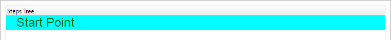Select the (For Loop) component
 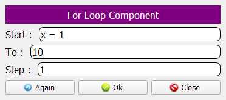
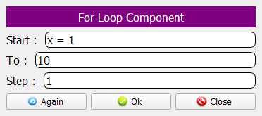
The Steps Tree will be updated

We will create an inner loop (i.e. for loop inside another for loop)
This time, The loop will use the (y) variable
We will print the (X) and (Y) values using the (Print Text) component
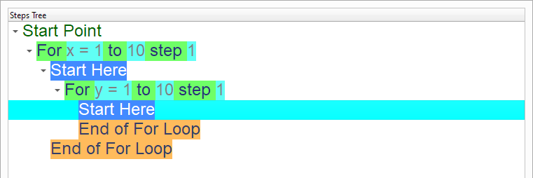 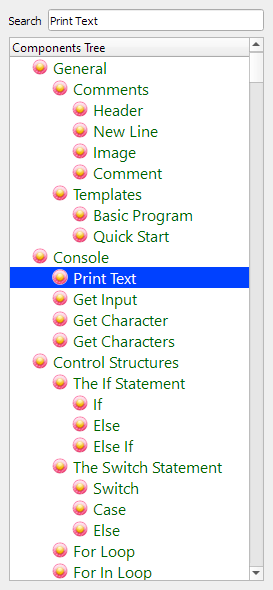 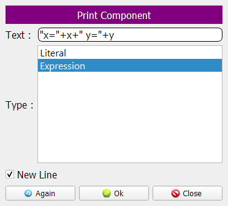Using the (If Statement) component, we will check if x=3 and y=5
When this happens, We will end both loops using the (Exit) component
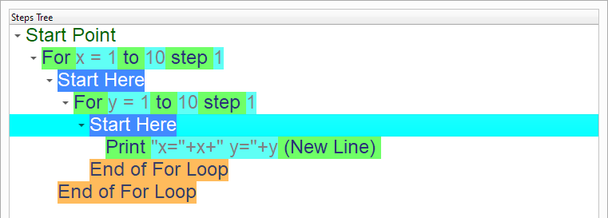 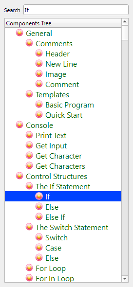 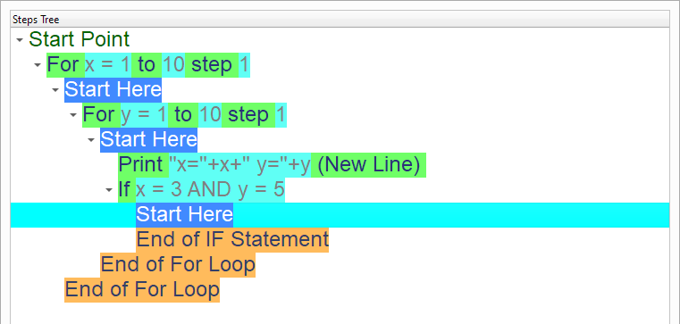Select the (Exit) component
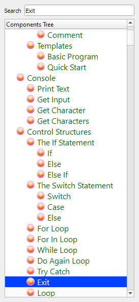Enter the data in the Interaction Page
Value: 2
This means exit from two loops!
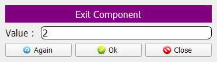Now we have the final Steps Tree in our program